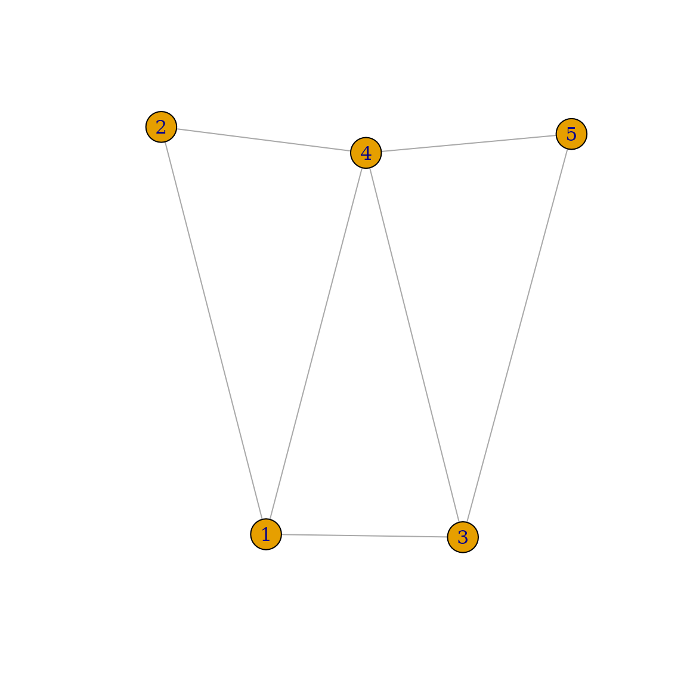
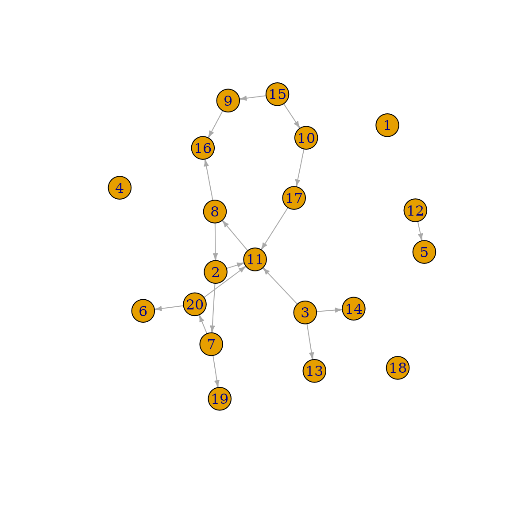
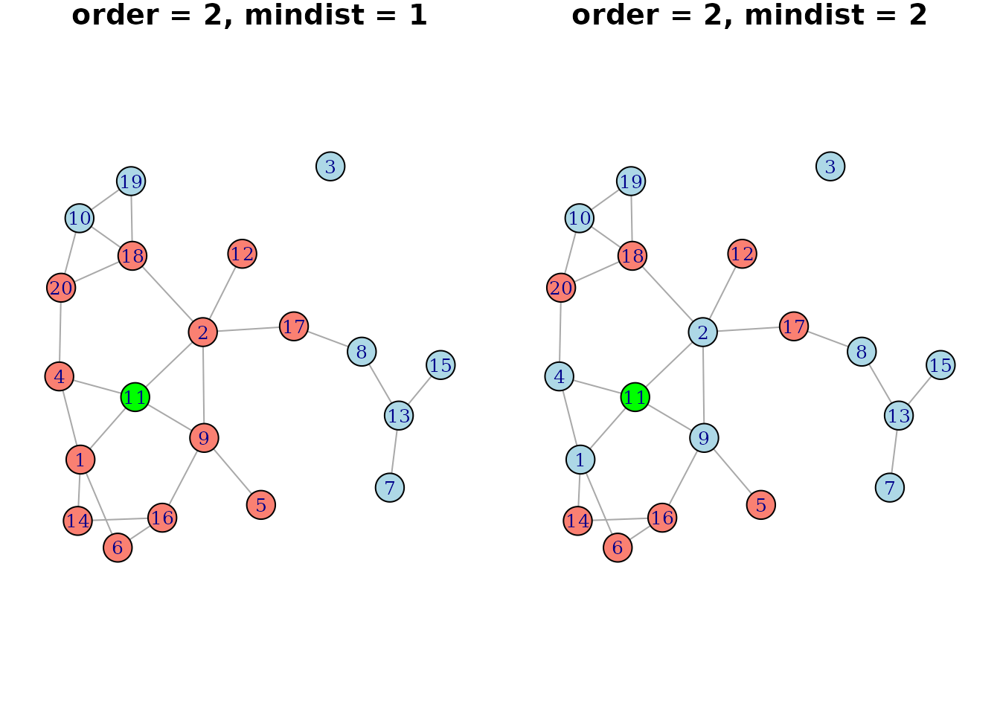
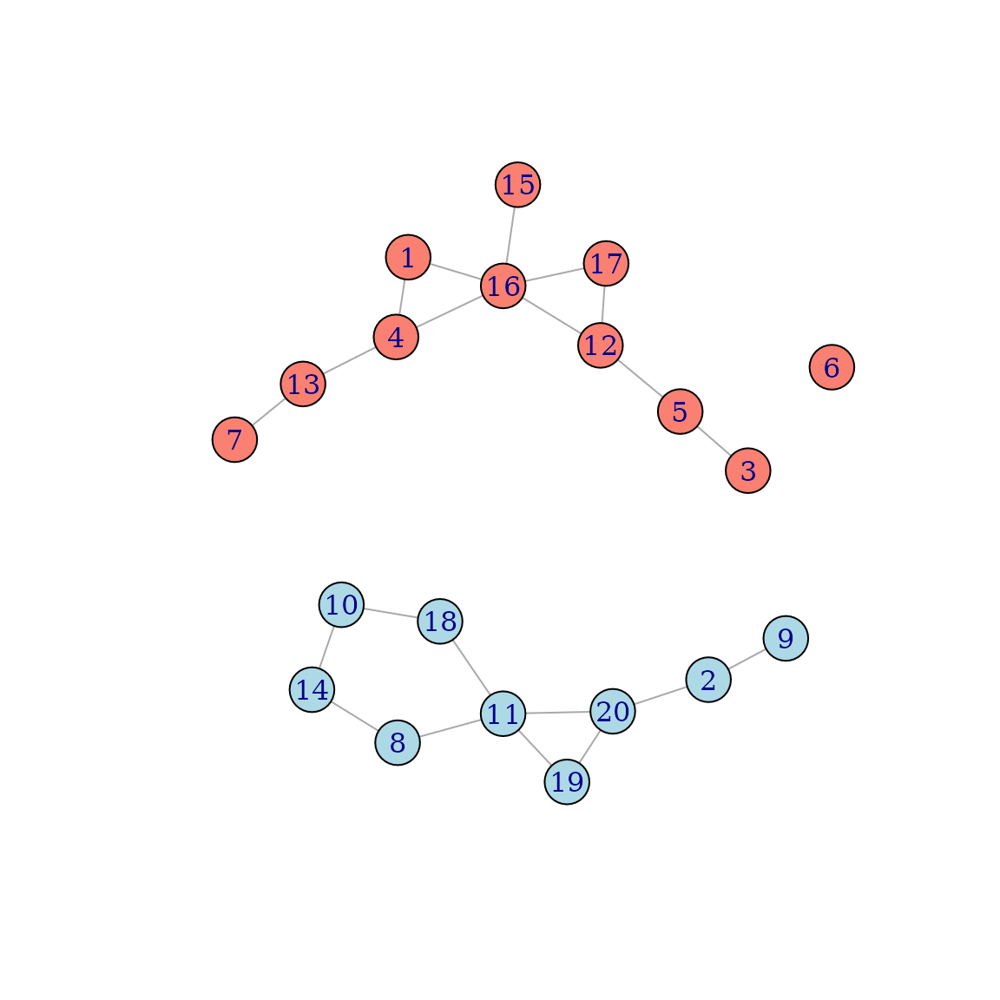

Simulating Data from a DAG with Network Dependencies
Robin Denz
Source:vignettes/v_sim_networks.Rmd
v_sim_networks.RmdIntroduction
Most algorithms used to generate artificial data based on DAGs do so using the classic assumption that all individual observations are independently and identically distributed (the classic i.i.d. assumption). This is done for multiple reasons. First, it makes the specification of the data generation process (DGP) a lot easier: distributions and structural equations can be defined once for the entire DGP and used to generate arbitrarily large amounts of data. Secondly, artificial DAG based data is most often used in simulation studies or other contexts in which statistical models are applied to them. Since most of these models require the i.i.d. assumption, it makes sense to generate data this way.
This is, however, not the case for all applications. For example, the spread of an infectious disease is dependent on how “connected” the population at risk is (Danon et al. 2011). An individual with many contacts will usually have a higher probability of coming into contact with an infected person and thus will have a higher chance of getting infected as well. This fact is in direct opposition to the i.i.d. assumption, because the infection status of one individual influences the infection status of other individuals. The individuals are said to “interfere” with each other (VanderWeele and An 2013). Networks-based simulations are one way to model such dependencies.
The following vignette introduces this methodology and how it is
implemented in the simDAG R package (Denz and Timmesfeld 2025). This is an advanced
topic. We assume that the reader is already familiar with the general
simDAG syntax and DAG based simulations. Please consult the
associated paper or the numerous other vignettes first, if this is not
the case.
What are networks-based simulations?
In a networks-based simulation, each individual is embedded in one or
multiple networks. These networks may have an arbitrary amount of
connections between the individuals, signifying who is connected to who.
Data may then be simulated using the essentially the same approach that
is used in classic DAG-based simulations, with the added possibility of
using the network structures to define individual dependencies. For
example, a variable could then be defined not only as a function of
other variables, but also as a function of the neighbors of an
individual
(and their variable values), where neighbors are defined as any
individual
that share some connection with
in a given network (although in directed networks, multiple options to
define neighbors are possible). A more rigorous explanation, along with
an explanation of their implementation of the methodology in the
simcausal package, is given by Sofrygin, Neugebauer, and van der Laan
(2017).
In network science, the points in a networks are often called nodes or vertices, while the connections between them are usually called edges or, in directed networks, arrows. When talking about networks I will stick to the terms vertices and edges here, to avoid confusion with the terms nodes and arrows that are also used when talking about DAGs. Note that a DAG is of course also a special type of network, but it serves a different purpose here. In the simulations described here, the DAG defines the causal relationships between variables, while the network describes connections between individuals.
Networks in regular simulations
A single network
We will start with a simple example, using only a single un-directed, un-weighted, static network that never changes and only a few variables that are also constant over time.
Consider the following simple network:
set.seed(1234)
data <- data.frame(from=c(1, 1, 2, 3, 4, 5, 5),
to=c(2, 3, 4, 4, 1, 3, 4))
g <- graph_from_data_frame(data, directed=FALSE)
plot(g)
In this network, individual
has three neighbors:
and
,
while individual
only has two neighbors:
and
.
We will first simulate age and sex values for
all of these individuals, irrespective of their position in the network,
using the standard simDAG syntax to generate data from a
DAG:
dag <- empty_dag() +
node("age", type="rnorm", mean=50, sd=10) +
node("sex", type="rbernoulli", p=0.5, output="numeric")Here, age and sex are both root nodes, with
age being a normally distributed variable with mean 50 and
standard deviation of 10 and sex being Bernoulli
distributed with equal probabilities of being either male
(sex = 0) or female (sex = 1). Now every
person has assigned values. If we generated the data right now, without
further nodes, it would look like this:
set.seed(5245)
data <- sim_from_dag(dag, n_sim=5)
print(data, row.names=TRUE)
#> age sex
#> <num> <num>
#> 1: 35.08209 1
#> 2: 47.01248 1
#> 3: 35.42111 0
#> 4: 57.29242 0
#> 5: 43.33519 0The rownames of this data.table show to which person
each value belongs. In other words, row 1 will be mapped to vertex 1 in
the network, row 2 will be mapped to vertex 2 of the network and so on.
To impose the network structure onto this DAG, we can
simply add the already generated igraph object to it using
the network() function:
dag <- dag + network("network1", net=g)In this network() call, all we had to do was provide a
name for the network (here called network1)
and the network itself, for which we used the igraph
object. Note that, because the graph is pre-generated with only 5
individuals in it, this DAG can now only generate data for 5 individuals
as well when actually using this network. To allow flexible changes of
n_sim when calling sim_from_dag() or
sim_discrete_time() later on, users need to supply a
function instead, which we will show later. For now we stay with the 5
individuals.
Now that the network is added, we are able to use net()
syntax in the formula argument of any further nodes. For
example, we could define a new variable called infected,
which should contain an indicator of whether someone is infected with
some infectious disease or not, as a function of the persons own
age and sex and as a function of
their neighbors age and sex using the
following syntax:
dag <- dag + node("infected", type="binomial",
formula= ~ 5 + age*0.1 + sex*-0.5 +
net(mean(age))*-0.2 + net(mean(sex))*-0.4)In this node, the infection probability increase with the persons own
age, is higher for males, decreases with higher mean ages
of the persons neighbors and decreases with higher proportions of
females among a persons neighbors. If we run the simulation again with
this updated DGP, the results looks like this:
set.seed(5245)
data <- sim_from_dag(dag, n_sim=5)
print(data, row.names=TRUE)
#> age sex infected
#> <num> <num> <lgcl>
#> 1: 35.08209 1 FALSE
#> 2: 47.01248 1 FALSE
#> 3: 35.42111 0 FALSE
#> 4: 57.29242 0 TRUE
#> 5: 43.33519 0 TRUENote that the intermediate variables (mean age of neighbors,
proportion of female neighbors) are not included in this output. Users
may use nodes of type "identity" to actually save and
inspect the output of net() calls instead. For example,
calculating the number of infected neighbors per person could now be
done using:
dag <- dag + node("n_inf_neighbors", type="identity",
formula= ~ net(sum(infected)), kind="data")
set.seed(5245)
data <- sim_from_dag(dag, n_sim=5)
print(data, row.names=TRUE)
#> age sex infected n_inf_neighbors
#> <num> <num> <lgcl> <num>
#> 1: 35.08209 1 FALSE 1
#> 2: 47.01248 1 FALSE 1
#> 3: 35.42111 0 FALSE 2
#> 4: 57.29242 0 TRUE 1
#> 5: 43.33519 0 TRUE 1This may be useful to inspect if the aggregation worked or to save
some computation time when the same net() call is used in
multiple subsequent nodes. In this example, individuals 4 and 5 are
infected, which means that individuals 1, 2 and 4 and 5 each have one
infected neighbor, while individual 3 has 2 infected neighbors because
it has a connection to both individuals 4 and 5.
Multiple networks
In reality, individuals are usually embedded in more than one network
at the same time. People are part of friendship networks, contact
networks, professional networks and so on. This is also directly
supported by the simDAG package. All we have to do is add
multiple networks to the DAG. Below we first generate two
random networks of the same size (20 individuals) using the
igraph package:
set.seed(56356)
g1 <- igraph::sample_gnm(n=20, m=30)
g2 <- igraph::sample_gnm(n=20, m=30)
V(g1)$color <- "salmon"
V(g2)$color <- "lightblue"Suppose that the first network is a “friendship network”, showing who is friends with who and the second is a “professional network”, showing who works with who. They look like this:
par(mfrow=c(1, 2), mar=c(0, 0, 0, 0) + 1)
plot(g1, main="Friends", margin=0, vertex.label.cex=0.8)
plot(g2, main="Work", margin=0, vertex.label.cex=0.8)We colored the vertices differently to highlight that they are two
distinct networks. We now first repeat large parts of the
DAG from earlier, but add both networks to it this
time:
dag <- empty_dag() +
node("age", type="rnorm", mean=50, sd=10) +
node("sex", type="rbernoulli", p=0.5, output="numeric") +
network("friends", net=g1) +
network("work", net=g2)We can now add a new node to this DAG, that utilizes
both network dependencies at the same time:
dag <- dag + node("infected", type="binomial",
formula= ~ 3 + age*0.1 + sex*-0.5 +
net(mean(age), net="friends")*-0.2 +
net(mean(sex), net="work")*-0.4)This is exactly the same node definition of the previous example,
with the only difference being that the mean age of the
friends network is used and the proportion of females is
used only for the work network. The results look like
this:
data <- sim_from_dag(dag, n_sim=20)
head(data, row.names=TRUE)
#> age sex infected
#> <num> <num> <lgcl>
#> 1: 53.86490 0 FALSE
#> 2: 46.69516 0 FALSE
#> 3: 33.77426 0 TRUE
#> 4: 49.78544 1 NA
#> 5: 58.56361 0 FALSE
#> 6: 66.37300 0 FALSEInterestingly, individual 4 has a value of NA in the
infected node. The reason for this is that individual 4
does not have any friends (don’t worry, she is not real so she can’t be
sad about this) and thus the mean(age) call is not defined
for this person. To replace such NA values with some other
values, the na argument of net() may be
used.
Weighted networks
In many applications in network science, the edges of networks are said to have weights, to specify that some connections are stronger than others. In the friendship network from earlier, the weights could for example indicate that one friendship is closer than another one. Using such weights is also directly supported for simulation purposes in this package. Let us first add some random weights to the friendships from the network shown above. Re-plotting this network one can see that the edges now have different weights:
Regular net() calls will ignore these weights, if not
specifically told not to. Users should use the internal
..weight.. variable to use the weights. For example, if we
want to re-use the DAG definition from earlier, we could do something
like this:
dag <- empty_dag() +
network("friends", net=g1) +
node("age", type="rnorm", mean=50, sd=10) +
node("sex", type="rbernoulli", p=0.5, output="numeric") +
node("infected", type="binomial",
formula= ~ 3 + age*0.1 + sex*-0.5 +
net(weighted.mean(x=age, w=..weight..))*-0.2 +
net(weighted.mean(x=sex, w=..weight..))*-0.4)
data <- sim_from_dag(dag, n_sim=20)
head(data)
#> age sex infected
#> <num> <num> <lgcl>
#> 1: 45.69134 1 FALSE
#> 2: 37.05165 0 FALSE
#> 3: 66.75057 1 FALSE
#> 4: 36.75051 1 NA
#> 5: 61.50802 0 TRUE
#> 6: 63.68616 0 TRUEIt is essentially the same code as before, with the only difference
being that we use weighted.mean() instead of
mean() to summarize the neighbors’ values and use the edge
weights within this function call, giving stronger connections more
weight. Users are of course free to use the ..weight..
variable in any other way as well.
Directed Networks
So far we have always assumed that all connections in a graph are un-directed, e.g. that once there is an edge between vertices and , that they have a reciprocal relationship with each other. In real networks it is often the case that relationships between vertices are not reciprocal, but directed. For example, in the professional network we might be interested in showing who is giving who orders. This could be done by using a directed network. These kinds of networks are also directly supported for simulation purposes in this package.
Let us create a random directed network first:
set.seed(123)
g <- sample_gnm(n=20, m=18, directed=TRUE, loops=FALSE)
plot(g, edge.arrow.size=0.4)
In this example, individual 3 can give orders to individual 11, 13
and 14, but cannot be given orders by these individuals. Now lets
suppose we want to only use the values of subordinates (e.g. vertices
connected by outgoing edges) to define neighborhoods. This can be
achieved using the mode argument of the net()
function. We again replicate the DAG from earlier, changing
it only slightly:
dag <- empty_dag() +
network("work", net=g) +
node("age", type="rnorm", mean=50, sd=10) +
node("sex", type="rbernoulli", p=0.5, output="numeric") +
node("infected", type="binomial",
formula= ~ 3 + age*0.1 + sex*-0.5 +
net(mean(age), mode="out", na=0)*-0.2 +
net(mean(sex), mode="out", na=0)*-0.4)
data <- sim_from_dag(dag, n_sim=20)
head(data)
#> age sex infected
#> <num> <num> <lgcl>
#> 1: 53.22599 1 TRUE
#> 2: 52.17259 1 FALSE
#> 3: 54.58468 0 FALSE
#> 4: 46.99742 0 TRUE
#> 5: 33.19981 0 TRUE
#> 6: 33.78001 1 TRUEConversely, if we want to only model the infected
probability as a function of the “bosses” of a node (e.g. the incoming
edges), all we would have to do is set mode="in" in the
net() calls. If we want to disregard the edge directions,
we could simply keep the mode argument at its default value
of "all". Since the way the edges are treated is defined
using net() calls, it is of course also possible to use
mixtures of these strategies in the same node definition, by using
multiple net() calls with different modes.
This could also be combined with weights (as described in the previous
section).
Neighborhood order
In all previous examples, we only used the immediate neighbors of a
node in our net() calls. By using the order
argument of the net() function, it is also possible to use
larger neighborhoods, meaning that instead of only considering the
directly connected individuals as neighbors, we may also include
individuals that are connected to those and so on. Below we show another
random network where the neighbors of node 11 (colored in green) are
colored in salmon for two different values of order:
If this was a directed network, the neighborhood would of course also be dependent on the direction of the edges, as described in the previous section. Below is a simple example on how one could use this functionality:
set.seed(2134)
g <- sample_gnm(n=20, m=15)
dag <- empty_dag() +
network("net1", net=g) +
node("age", type="rnorm", mean=50, sd=10) +
node("sex", type="rbernoulli", p=0.5, output="numeric") +
node("infected", type="binomial",
formula= ~ 3 + age*0.1 + sex*-0.5 +
net(mean(age), order=1, na=0)*-0.2 +
net(mean(sex), order=2, na=0)*-0.4)
data <- sim_from_dag(dag, n_sim=20)
head(data)
#> age sex infected
#> <num> <num> <lgcl>
#> 1: 57.71886 1 TRUE
#> 2: 53.62951 0 TRUE
#> 3: 61.21526 1 TRUE
#> 4: 57.20119 1 FALSE
#> 5: 30.44710 0 FALSE
#> 6: 45.28895 0 FALSEHere, we largely replicated the DAG from earlier, but use different
order neighborhoods for the effect of age and
sex. Again, because the order is defined by
individual net() calls, users may use different values of
order in the same node definition without any issues. Note
that when using order > 1 all edge weights are ignored,
because it is not clear what the edge weight should be when considering
indirect connections.
We could also go an additional step further and only
consider the direct connections to neighbors as neighbors, without using
the direct connections themselves. This can be done using the
mindist argument of net(). Below is another
graph illustrating the difference of using mindist=1 and
mindist=2 with order=2 given the earlier
network:

This might be useful to model extended network effects as direct
effects in a DAG. Repeating the DAG from
earlier (with some slight changes) we could use something like:
set.seed(2134)
g <- sample_gnm(n=20, m=15)
dag <- empty_dag() +
network("net1", net=g) +
node("age", type="rnorm", mean=50, sd=10) +
node("sex", type="rbernoulli", p=0.5, output="numeric") +
node("infected", type="binomial",
formula= ~ 3 + age*0.1 + sex*-0.5 +
net(mean(age), order=2, mindist=2, na=0)*-0.4)
data <- sim_from_dag(dag, n_sim=20)
head(data)
#> age sex infected
#> <num> <num> <lgcl>
#> 1: 57.71886 1 TRUE
#> 2: 53.62951 0 FALSE
#> 3: 61.21526 1 TRUE
#> 4: 57.20119 1 FALSE
#> 5: 30.44710 0 FALSE
#> 6: 45.28895 0 FALSENetworks as a function of other variables
Up to this point we have always created the networks completely
independently from all other variables, which in reality could be
considered unrealistic. Luckily, networks may also be defined as a
function of already generated variables as well. Similar to regular
node() function calls, it is possible to use the
parents argument to specify that a network is based on
values of the parents. The data of the
parents is then automatically passed to the
data argument of the function that should be used to create
the network, allowing all kinds of dependencies to be implemented by the
user.
Suppose that the goal is to generate data for both males and females. For some reason there should be essentially separate networks for males and females. This might for example arise when considering networks in sports that are separated by sex. To simulate such an example, we first define some functions:
is_different_sex <- function(g, x) {
V(g)[ends(g, x)[1]]$type != V(g)[ends(g, x)[2]]$type
}
gen_network <- function(n_sim, data) {
g <- sample_gnm(n=n_sim, m=50)
V(g)$type <- data$sex
g <- delete_edges(g, which(vapply(E(g), is_different_sex,
FUN.VALUE=logical(1), g=g)))
return(g)
}Here the id_different_sex() function simply takes in an
edge of the graph and checks whether both vertices have the same type.
The gen_network() function first generates a random graph
and then adds the sex contained in the supplied
data as a type to each node. It then deletes all edges
where the type (e.g. sex) of the vertices is not the same.
We can incorporate this into a DAG using:
dag <- empty_dag() +
node("age", type="rnorm", mean=25, sd=5) +
node("sex", type="rbernoulli", p=0.5) +
network("network1", net=gen_network, parents="sex") +
node("infected", type="binomial", formula= ~ 1 + net(mean(age))*0.5)We can now simulate from this DAG:
set.seed(1324)
data <- sim_from_dag(dag, n_sim=20, return_networks=TRUE)
head(data$data)
#> age sex infected
#> <num> <lgcl> <lgcl>
#> 1: 17.74261 TRUE TRUE
#> 2: 33.84116 FALSE TRUE
#> 3: 17.13370 TRUE TRUE
#> 4: 13.14236 TRUE TRUE
#> 5: 33.44052 TRUE TRUE
#> 6: 21.95168 TRUE NANote that we set return_networks=TRUE, so that we can
also inspect the generated network. Whenever this is done, the
sim_from_dag() function actually returns a list containing
both the generated data and the networks.
Below is the generated networks, with different vertex colors for each
sex:

This is a fairly artificial example, because it is only meant to
illustrate this functionality in a simple way. Users could of course use
this in much more interesting ways. Because the net
argument allows any function, there are no limits set to how the network
structure should be dependent on the data at hand.
Networks in discrete-time simulation
It is of course also possible to use the outlined
networks-simulation-based approach in discrete-time simulations
conducted using the sim_discrete_time() function. Below we
illustrate how to do this using both static and dynamically changing
networks.
Static networks
As a simple example, we will consider the spread of an infectious
disease through a (un-directed and un-weighted) network of 18
individuals and 6 distinct points in time. In this simulation, there is
only one variable of interest: the infection status of a person, denoted
by infected (0 = not infected, 1 = infected). First, we
will generate a random graph of 18 individuals with 30 connections
between them using the igraph package:
set.seed(244368)
g2 <- igraph::sample_gnm(n=18, m=30)
plot(g2)We will assume that the probability of infection rises in a very simple fashion with the number of infected neighbors in the network. At all individuals have a 5% chance of becoming infected through some unknown external event. From then on, only individuals with infected neighbors can be infected. In particular, the general probability of infection at is defined as:
with being the number of infected neighbors of the individual. Additionally, once infected, a person stays infected. We can simulate this kind of date using the following code:
prob_infection <- function(data, sim_time) {
if (sim_time==1) {
p <- rep(0.05, nrow(data))
} else {
p <- fifelse(data$n_infected_neighbors==0, 0,
fifelse(data$n_infected_neighbors > 3, 0.9, 0.4))
}
return(p)
}
dag <- empty_dag() +
network("net1", net=g2) +
node_td("n_infected_neighbors", type="identity",
formula= ~ net(sum(infected_event), na=0), kind="data") +
node_td("infected", type="time_to_event", event_duration=Inf,
immunity_duration=Inf, parents=("n_infected_neighbors"),
prob_fun=prob_infection)Here, we first define the prob_infected() function,
which implements the conditional probability distribution defined above.
This function is later used in a "time_to_event" node. We
then define the DAG required for the simulation. First, we
add a single call to network() to an empty DAG
to allow the usage of network dependencies. We then add a time-dependent
node using node_td(), which simply calculates the number of
infected neighbors a node has. We then define the final node, which is
infected, using the prob_infected() function
defined earlier.
Now we can run the simulation and transform the output into the long-format for easier processing:
sim <- sim_discrete_time(dag, n_sim=18, max_t=6, save_states="all")
data <- sim2data(sim, to="long")
head(data)
#> Key: <.id, .time>
#> .id .time n_infected_neighbors infected
#> <int> <int> <num> <lgcl>
#> 1: 1 1 0 FALSE
#> 2: 1 2 0 FALSE
#> 3: 1 3 1 FALSE
#> 4: 1 4 2 FALSE
#> 5: 1 5 2 TRUE
#> 6: 1 6 3 TRUEUsing a simple for loop and the
plot.igraph() function (with some cosmetic changes), we can
also visualize the spread of the infection on the network. Below are the
resulting 6 figures, which show the network at each point in time of the
simulation, with the infected individuals colored in salmon and the
not-infected individuals colored in lightblue:
E(g2)$color <- "lightgray"
par(mfrow=c(3, 2), mar=c(0, 0, 0, 0) + 2)
for (i in seq_len(6)) {
data_i <- subset(data, .time==i)
V(g2)$color <- ifelse(data_i$infected, "salmon", "lightblue")
set.seed(124)
plot(g2,
vertex.label.cex=0.8,
vertex.label.color="black",
size=1,
main=paste0("t = ", i),
layout=layout_nicely(g2),
margin=0)
}The infection started with only individual 14 being infected (the index case). From there it spread immediately to individuals 2 and 8 and continued from there, as an actual infection might have. It would of course also be possible to make the probability generating function more realistic, or to add further variables such as vaccinations.
Dynamic networks
In all previous examples, the network structure itself never changed,
because we only used a single network() call defining a
static network. Below we extend our approach to the case of
dynamic networks, that may change over time (possibly as a
function of other fixed or time-varying variables).
Random new networks at each point in time
Let us start with the easiest type of dynamic network that we can imagine: a network structure that changes entirely at every single point in time without any correlation to what it previously looked like or to what has happened to the individuals in it. We can do this using almost the same code that we used earlier. The main difference for any situation in which dynamic networks should be used is that we need to define a function that generates the network for us. Below is one possibility:
gen_network <- function(n_sim) {
igraph::sample_gnm(n=n_sim, m=30)
}The only requirement for the function is that it has a single named
argument called n_sim, which controls the size of the
network (number of vertices in it). In the function above, this argument
is simply passed to the sample_gnm() function of the
igraph package that we already used earlier. We can now use
almost the same code as we did before to generate data using this
function:
dag <- empty_dag() +
node_td("n_infected_neighbors", type="identity",
formula= ~ net(sum(infected_event), na=0), kind="data") +
node_td("infected", type="time_to_event", event_duration=Inf,
immunity_duration=Inf, parents=("n_infected_neighbors"),
prob_fun=prob_infection) +
network_td("net1", net=gen_network)
set.seed(1335)
sim <- sim_discrete_time(dag, n_sim=18, max_t=6, save_states="all",
save_networks=TRUE)
data <- sim2data(sim, to="long")
head(data)
#> Key: <.id, .time>
#> .id .time n_infected_neighbors infected
#> <int> <int> <num> <lgcl>
#> 1: 1 1 0 FALSE
#> 2: 1 2 0 FALSE
#> 3: 1 3 1 FALSE
#> 4: 1 4 1 TRUE
#> 5: 1 5 3 TRUE
#> 6: 1 6 5 TRUEThe only difference to the previous code is that we used
network_td() instead of network(), passing the
function to the net argument. Everything else is the same.
The code to visualize the spread of the disease is also very similar,
with the one change being that we now have one network per slide (saved
in the sim object because we set
save_networks=TRUE):
par(mfrow=c(3, 2), mar=c(0, 0, 0, 0) + 2)
for (i in seq_len(6)) {
data_i <- subset(data, .time==i)
g_i <- sim$past_networks[[i]]$net1$net
E(g_i)$color <- "lightgray"
V(g_i)$color <- ifelse(data_i$infected, "salmon", "lightblue")
set.seed(124)
plot(g_i, vertex.label.cex=0.8,
vertex.label.color="black",
size=1,
main=paste0("t = ", i),
layout=layout_nicely(g_i),
margin=0)
}Here, the simulation starts out with individuals 8 being infected,
while being connected to individuals 3, 7, 11, 15 and 16 at
.
This individual then spread the infection to individuals 3 and 15, as
can be seen at
.
However, the network has changed completely at this point. Now the
individuals are connected to others, spreading the infection even
further to those they are connected with now. This repeats until almost
everyone (except individuals 4 and 12) are infected. Note that it makes
a significant difference in which order the node_td() and
network_td() calls are added, as in usual simulations using
sim_discrete_time().
Adjusting a network over time
Lets move to a more useful example, in which the network is initiated once at the beginning and changed slightly over time instead of re-drawing it every time. As an example, we will again extend the earlier infectious disease example. In this new example, the government is trying to contain the epidemic by isolating infected individuals. The act of isolation in this context means, that an infected individual is put under quarantine and is not allowed to have any contact to other individuals, which translates to removing all connections the infected individual has in the network. We will assume that the government is able to perfectly enforce the isolation, but that it is a little slow in doing so. Only after one full day of being sick does the government realize that an individual is infected.
First, we have to adjust the gen_network() function. We
will use the following code:
gen_network <- function(n_sim, sim_time, network, data) {
if (sim_time==0) {
return(igraph::sample_gnm(n=n_sim, m=23))
}
rm_edges <- data$.id[data$infected_event==TRUE &
data$infected_time_since_last > 0]
if (length(rm_edges) > 0) {
rm_edges <- do.call(c, incident_edges(network, rm_edges))
g_new <- delete_edges(network, rm_edges)
} else {
g_new <- network
}
return(g_new)
}There is a few lines of obscure code here, but generally what the
function does is really simple. At
it simply generates a random graph using sample_gnm(). From
on it simply checks whether any person is infected and isolates them, by
deleting their connections and returning the adjusted network. By adding
the time-dependent networks after the time-dependent nodes in the
DAG, we ensure that it is updated only after all nodes of a
day have been generated. Because the time_since_last
counter of the infected node starts at 0 using
data$infected_time_since_last > 0 ensures that each
individual has one full day to spread the infection. Note that the
arguments sim_time, network and
data are automatically passed internally.
sim_time is the current simulation time,
network is the current state of the network and
data is the current state of the data.
We can now re-use almost the same DAG definition from
earlier:
dag <- empty_dag() +
node_td("n_infected_neighbors", type="identity",
formula= ~ net(sum(infected_event), na=0), kind="data") +
node_td("infected", type="time_to_event", event_duration=Inf,
immunity_duration=Inf, parents=("n_infected_neighbors"),
prob_fun=prob_infection, time_since_last=TRUE) +
network_td("net1", net=gen_network, create_at_t0=TRUE)The only difference to before is that we actively set
create_at_t0=TRUE so that the network gets created before
time-dependent processing starts (so we have a network to adjust at
)
and that we set time_since_last=TRUE in the
infected node to track the time since the original
infection, because we need that information in the network generating
function. Lets run the simulation again:
set.seed(13354)
sim <- sim_discrete_time(dag, n_sim=18, max_t=6, save_states="all",
save_networks=TRUE)
data <- sim2data(sim, to="long")
head(data)
#> Key: <.id, .time>
#> .id .time n_infected_neighbors infected infected_time_since_last
#> <int> <int> <num> <lgcl> <num>
#> 1: 1 1 0 FALSE NA
#> 2: 1 2 1 FALSE NA
#> 3: 1 3 1 TRUE 0
#> 4: 1 4 0 TRUE 1
#> 5: 1 5 0 TRUE 2
#> 6: 1 6 0 TRUE 3In the first few rows of the data we can already see that the number of infected individuals does not And finally lets plot the resulting infection spread again:
par(mfrow=c(3, 2), mar=c(0, 0, 0, 0) + 2)
layout_g <- layout_nicely(sim$past_networks[[1]]$net1$net)
for (i in seq_len(6)) {
data_i <- subset(data, .time==i)
g_i <- sim$past_networks[[i]]$net1$net
E(g_i)$color <- "lightgray"
V(g_i)$color <- ifelse(data_i$infected, "salmon", "lightblue")
set.seed(124)
plot(g_i, vertex.label.cex=0.8,
vertex.label.color="black",
size=1,
main=paste0("t = ", i),
layout=layout_g,
margin=0)
}As can be seen, due to the timely delay of the isolation, the infection is still able to spread, but it cannot reach all individuals. Near the end of the simulation, practically all connections are removed, making it impossible for the infection to spread further. This is by no means a realistic example, but it showcases how changing networks might be utilized in this package.
This simulation could easily be extended to make the isolation non-permanent, by re-adding the removed connections after a pre-defined duration, or could be even further extended by adding vaccinations or other variables. Additionally, although not shown in this vignette, it would of course also be possible to use the other features shown for regular simulations (weighted or directed networks, multiple networks, etc.) in discrete-time simulation as well.
Discussion
Networks-based simulations offer an additional amount of flexibility
in specifying data generation processes (DGP) that is usually not
included in general-purpose simulation software. By making
cross-individual dependencies possible through one or multiple networks
and allowing those to also be influenced by individual-level variables,
almost any kind of data can be generated. The simDAG
package offers a simple and consistent syntax to perform such
simulations. Network dependencies are fully integrated into the enhanced
formula syntax through the net() function,
which hopefully makes the barrier to use this methodology a lot less
daunting for potential users.
Despite the great flexibility offered by this approach, it is used
quite infrequently in practice. The preprint published by Sofrygin, Neugebauer, and van der Laan (2017)
did not gather a lot of attention, even though they also offered a clean
and powerful implementation of the method through the
simcausal (Sofrygin, van der Laan,
and Neugebauer 2017) package (which heavily inspired the
presented simDAG implementation). I suspect that the main
reason for this is that there are only few statistical models designed
to actually analyze data with such complex DGPs. Despite recent
advancements, the combination of network science and causal inference is
still in its infancy, as has been pointed out by others (Ogburn et al. 2024; VanderWeele and An 2013; An,
Beauvile, and Rosche 2022). I hope that this implementation will
make future investigations into this subject easier or at least more
convenient to methodological researchers.